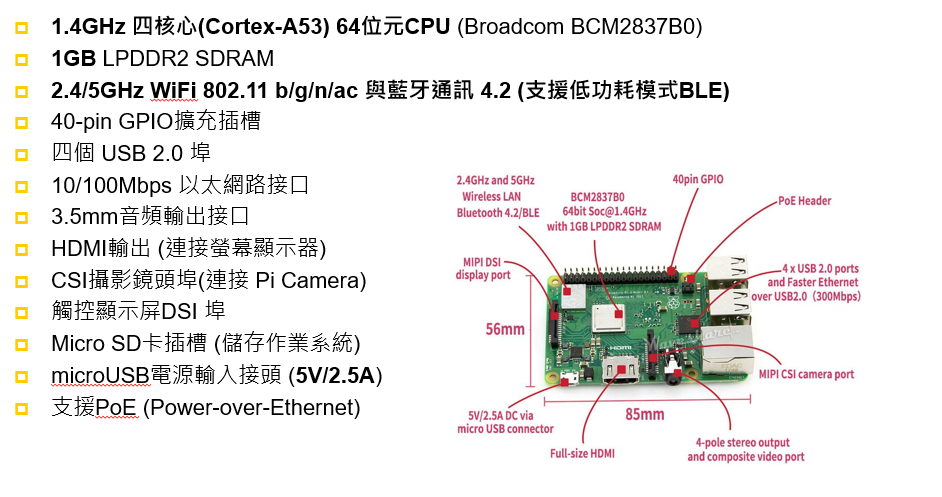
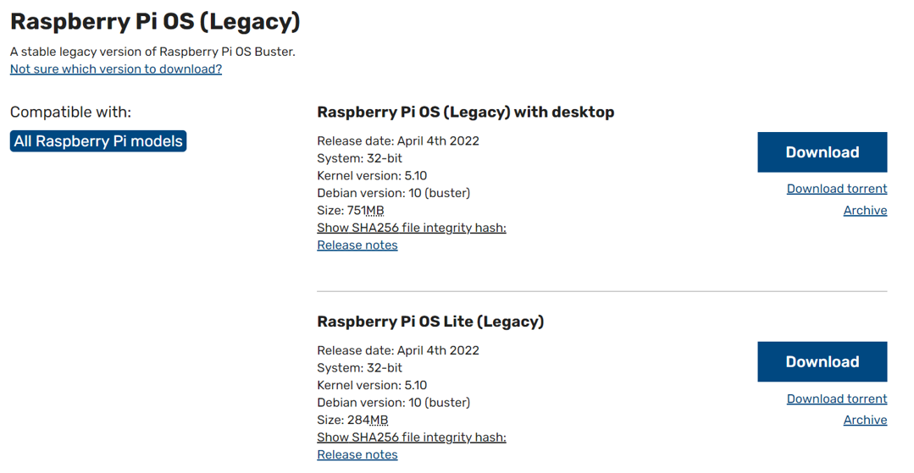
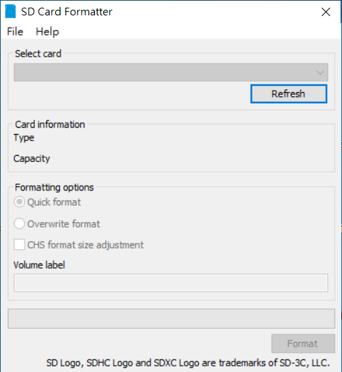
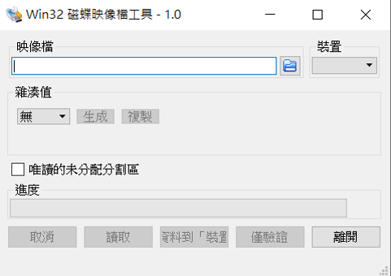
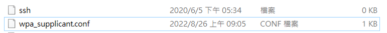
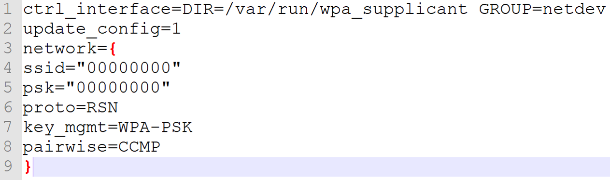
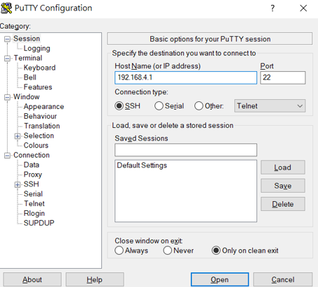
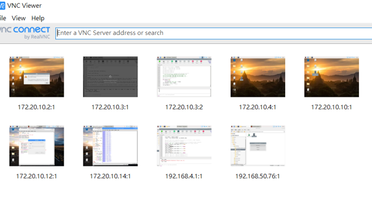
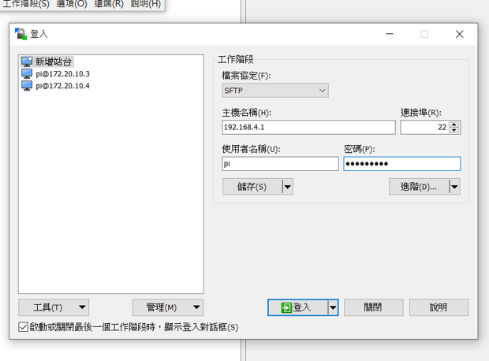

Raspberry PI 介紹與系統安裝
相關應用教學
介紹

作業系統安裝(windows 需準備SD卡建議16GB以上)
至官網下載最新作業系統 RASPBIAN STRETCH WITH DESKTOP(有桌面環境)
使用SD Card Formatter將記憶卡格式化
將RASPBIAN STRETCH WITH DESKTOP zip檔解壓縮 並使用Win32DiskImager 將ISO檔讀取到記憶卡
備份記憶卡內作業系統到電腦(選用)
選擇映像檔路徑並命名檔案 並點選下方資料到裝置的按鈕開啟raspberry pi遠端登入權限與設定wifi連線
透過檔案管理在記憶卡新增2個檔案
開啟wpa_supplicant.conf 新增以下內容 其中 ssid代表自己的熱點名稱 psk為熱點密碼
相關應用工具介紹

putty
輸入樹莓派ip位置選擇open 帳號預設為pi 密碼預設為raspberry 可以透過此程式下指令 執行程式等

Vnc viewer
透過putty輸入vncserver指令 完成後會顯示(xxx.xxx.xxx.x:1) 在vncviewer上方網址列輸入xxx.xxx.xxx.x:1 並enter
帳號預設為pi 密碼預設為raspberry 可以透過此程式可以顯示樹莓派遠端桌面及控制

Winscp
在winscp主機名稱輸入ip位置 使用者名稱預設為pi 密碼預設為raspberry 可以透過此程式可以讓電腦及樹莓派透過拖移方式進行檔案互相傳輸